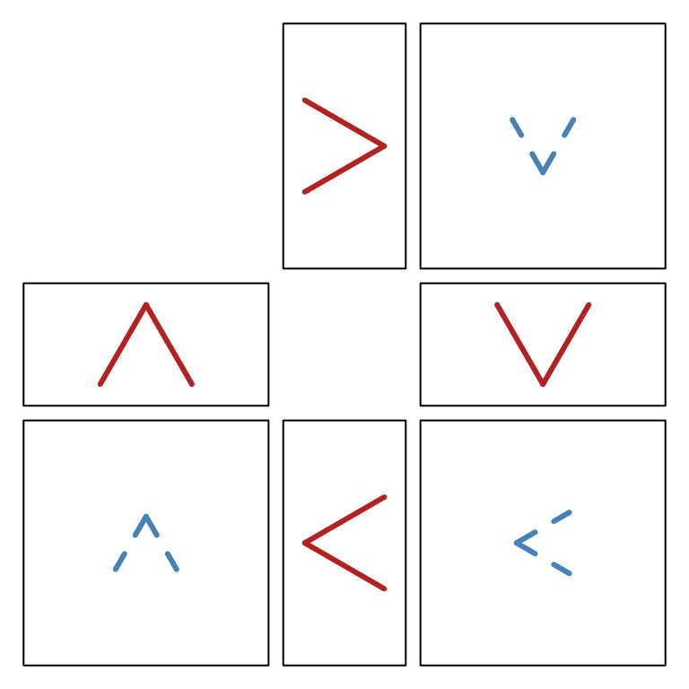

Introduction to zenplots
M. Hofert and R. W. Oldford
2025-09-06
Source:vignettes/intro.Rmd
intro.RmdAll pairs
A zenplot can show the same information as a
pairs plot but with two important display differences.
First, the matrix organization of the pairs layout is
replaced by the “zig-zag” layout of zenplot. Second, the
number of plots produced is about half that of a pairs plot
allowing each plot in a zenplot to be given more visual
space.
Producing all pairs with PairViz
A convenient function to produce all pairs can be found in the
PairViz package found on cran and installed in
R via install.packages("PairViz").
We will illustrate this functionality and the difference between a
pairs plot and a zenplot by first considering
a small dataset on earthquakes having only a few variates. The
difference between the two plots becomes much more important for data
having larger numbers of variates – we illustrate the difference again
using German data on voting patterns in two elections.
Example: Ground acceleration of earthquakes
The built-in R data set called attenu
contains measurements to estimate the attenuating effect of distance on
the ground acceleration of earthquakes in California.
There are 5 different variates used to describe the peak acceleration of 23 California earthquakes measured at different observation stations. The data set contains 182 different peak acceleration measurements and has some missing data. The first few cases of the data set look like
head(attenu)## event mag station dist accel
## 1 1 7.0 117 12 0.359
## 2 2 7.4 1083 148 0.014
## 3 2 7.4 1095 42 0.196
## 4 2 7.4 283 85 0.135
## 5 2 7.4 135 107 0.062
## 6 2 7.4 475 109 0.054Its variates are
## [1] "event" "mag" "station" "dist" "accel"and we are interested in all pairs of these variates.
To get these, first imagine a graph having as its nodes the variates of the data. An edge of this graph connects two nodes and hence represents a pair of variates. If interest lies in all pairs of varates, then the graph is a complete graph – it will have an edge between every pair of nodes. An ordering of variate pairs corresponds to any path on the graph. To have an ordering of all pairs of variates, the path must visit all edges and is called an Eulerian, or Euler path. Such a path always exists for complete graphs on an odd number of nodes; when the number of nodes is even, extra edges must be added to the graph before an Eulerian can exist.
For a complete graph with n nodes, the function eseq
(for Euler sequence) function from the PairViz package
returns an order in which the nodes (numbered 1 to n) can be visited to
produce an Euler path. It works as follows.
## Since attenu has 5 variates, the complete graph has n=5 nodes
## and an Euler sequence is given as
eseq(5)## [1] 1 2 3 1 4 2 5 3 4 5 1In terms of the variate names of attenu, this is:
## [1] "event" "mag" "station" "event" "dist" "mag" "accel"
## [8] "station" "dist" "accel" "event"
Precomputed complete graph.
this sequence traces an Eulerian path on the complete graph and so presents every variate next to every other variate somewhere in the order.
Optional dependency: This graph, and any other graph, in this vignette can be displayed as a Graphviz plot using the plot() function method for graphs from the Bioconductor package Rgraphviz. To install locally:
if (!requireNamespace("BiocManager", quietly=TRUE)) install.packages("BiocManager")
BiocManager::install("Rgraphviz")If the Rgraphviz package is installed, then the above
graph could be produced as follows:
library(Rgraphviz)
mygraph <- PairViz::mk_complete_graph(names(attenu))
Rgraphviz::plot(mygraph)Euler sequences via zenpath
This functionality (and more) from PairViz has been
bundled together in the zenplots package as a single
function zenpath. For example,
zenpath(5)## [1] 5 1 2 3 1 4 2 5 3 4 5This sequence, while still Eulerian, is slightly different than that
returned by eseq(5). The sequence is chosen so that all
pairs involving the first index appear earliest in the sequence, then
all pairs involving the second index, and so on. We call this a “front
loaded” sequence and identify it with the zenpath argument
method = "front.loaded". Other possibilities are
method = "back.loaded" and method = "balanced"
giving the following sequences:
## Back loading ensures all pairs appear latest (back) for
## high values of the indices.
zenpath(5, method = "back.loaded")## [1] 1 2 3 1 4 2 5 3 4 5 1
## Frot loading ensures all pairs appear earliest (front) for
## low values of the indices.
zenpath(5, method = "front.loaded")## [1] 5 1 2 3 1 4 2 5 3 4 5
## Balanced loading ensures all pairs appear in groups of all
## indices (Hamiltonian paths -> a Hamiltonian decomposition of the Eulerian)
zenpath(5, method = "balanced")## [1] 1 2 3 5 4 1 3 4 2 5 1The differences are easier to see when there are more nodes. Below, we show the index ordering (top to bottom) for each of these three methods when the graph has 15 nodes, here labelled”a” to “o” (to make plotting easier).
Starting from the bottom (the back of the sequence), “back loading”
has the last index, “o”, complete its pairing with every other index
before “n” completes all of its pairings. All of “n”’s pairings complete
before those of “m”, all of “m”’s before “l”, and so on until the last
pairing of “a” and “b” are completed. Note that the last indices still
appear at the end of the sequence (since the sequence begins at the top
of the display and moves down). The term “back loading” is used here in
a double sense - the later (back) indices have their pairings appear as
closely together as possible towards the back of the returned sequence.
A simple reversal, that is
rev(zenpath(15, method = "back.loaded")), would have them
appear at the beginning of the sequence. In this case the “back loading”
would only be in one sense, namely that the later indexed (back) nodes
appear first in the reversed sequence.
Analogously, “front loading” has the first (front) indices appear at the front of the sequence with their pairings appear as closely together as possible.
The “balanced” case ensures that all indices appear in each block of pairings. In the figure there are 7 blocks.
All three sequences are Eulerian, meaning all pairs appear somewhere in each sequence.
Pairs plots versus zenplots
Eulerian sequences can now be used to compare a pairs
plot with a zenplot when all pairs of variates are to be
displayed.
First a pairs plot:
## We remove the space between plots and suppress the axes
## so as to give maximal space to the individual scatterplots.
## We also choose a different plotting character and reduce
## its size to better distinguish points.
pairs(attenu, oma=rep(0,4), gap=0, xaxt="n", yaxt="n")
We now effect a display of all pairs using zenplot.
## Plotting character and size are chosen to match that
## of the pairs plot.
## zenpath ensures that all pairs of variates appear
## in the zenplot.
## The last argument, n2dcol, is chosen so that the zenplot
## has the same number of plots across the page as does the
## pairs plot.
zenplot(attenu[, zenpath(ncol(attenu))], n2dcol=4)Each display shows scatterplot of all choose(5,2) = 10
pairs of variates for this data. Each display occupies the same total
area.
With pairs each plot is displayed twice and arranged in
a symmetric matrix layout with the variate labels appearing along the
diagonal. This makes for easy look-up but uses a lot of space.
With zenplot, each plot appears only once with its
coordinate defining variates appearing as labels on horizontal (top or
bottom) and vertical (left or right) axis positions. The layout follows
the order of the variates in which the variates appear in the call to
zenplot beginning in the top left corner of the display and
then zig-zagging from top left to bottom right; when the rightmost
boundary or the display is reached, the direction is reversed
horizontally and the zigzag moves from top right to bottom left. The
following display illustrates the pattern (had by simply calling
zenplot):
## Call zenplot exactly as before, except that each scatterplot is replaced
## by an arrow that shows the direction of the layout.
zenplot(attenu[, zenpath(ncol(attenu))], plot2d="arrow", n2dcol=4)
The zig zag pattern of plots appears as follows.
- The top left plot (of either
zenplotdisplay) has horizontal variateeventand vertical variatemag. - To its right is a plot sharing the same vertical variate
magbut now with horizontal variatestation. Note that the variatestationhas some missing values and this is recorded on its label asstation (some NA). - Below this a plot appears with the same horizontal variate
stationbut now with vertical variateevent. Since this is the first repeat appearance ofeventit appears with a suffix asevent.1. - To its right is a plot with shared vertical variate
eventand new horizontal variatedist. - Below this is a plot having shared horizontal variate
distand as vertical variate the first repeat of the variatemag. - To its right is a plot having shared vertical variate
magand new horizontal variateaccel. - The right edge of the display is reached and the zigzag changes horizontal direction repeating the pattern until either the left edge is reached (whereupon the horizontal direction is reversed) or the variates are exhausted.
Like the pairs plot, the zenplot lays its
plots out on a two dimensional grid – the argument n2dcol=4
specifies the number of columns for the 2d plots (e.g. scatterplots). As
shown, this can lead to a lot of unused space in the display.
The zenplot layout can be made more compact by different
choices of the argument n2dcol (odd values provide a more
compact layout). For example,
By default, zenplot tries to determine a value for
n2dcol that minimizes the space unused by its zigzag
layout.
 with layout directions as
with layout directions as

As the direction arrows show, the default layout is to zigzag horizontally first as much as possible.
This is clearly a much more compact display. Again, axes are shared wherever a label appears between plots.
Unless explicitly specified, the value of n2dcol is
determined by the aregument scaling which can either be a
numerical value specifying the ratio of the height to the width of the
zenplot layout or be a string describing a page whose ratio
of height to width will be used. The possible strings are
letter'' (the default),square’‘, A4'',golden’’
(for the golden ratio), or ``legal’’.
Visual search
The display arrangement of a scatterplot matrix facilitates the lookup of the scatterplot for any particular pair of variates by simply identifying the corresponding row and columns.
The scatterplot matrix also simplifies the visual comparison of the one variate to each of several others by scanning along any single row (or column). Note however that this single row scan does come at the price of doubling the number of scatterplots in the display.
These two visual search facilities are diminished by the layout of a
zenplot. Although the same information is available in a
zenplot the layout does not lend itself to easy lookup from
variates to plots. If the zenplot layout is used in an
interactive graphical system, other means of interaction could be
implemented to have, for example, all plots containing a particular
variate (or pair of variates) distinguish themselves visually by having
their background colour change temporarily.
On the other hand, the reverse lookup from plot to variates is
simpler in a zenplot than in a scatterplot matrix,
particularly for large numbers of variates.
Both layouts allow a visual search for patterns in the point configurations. Having many plots be presented at once enables a quick visual search over a large space for the existence of interesting point configurations (e.g. correlations, outliers, grouping in data, lines, etc.).
When the number of plots is very large, an efficient compact layout
can dramatically increase the size of the visual search space. This is
where zenplot’s zigzag layout outperforms the scatterplot
matrix.
This could be illustrated this on the following example.
Example: German election data
In the zenplots package the data set
de_elect contains the district results of two German
federal elections (2002 and 2005) as well as a number of socio-economic
variates as well.
## Access the German election data from zenplots package
data(de_elect)There are 299 districts and 68 variates yielding a possible
choose(68,2) = 2278 different scatterplots.
This many scatterplots will overwhelm a pairs plot. In
its most compact form, the pairs plot for the first 34 variates already
occupies a fair bit of space:
## pairs(de_elect[,1:34], oma=rep(0,4), gap=0, pch=".", xaxt="n", yaxt="n")(N.B. We do not execute any of these large plots simply to keep the storage needs of this vignette to a minimum. We do encourage the reader to execute the code however on their own.)
If you execute the above code you will see interesting point configurations including: some very strong positive correlations, some positive and negative correlations, non-linear relations, the existence of some outlying points, clustering, striation, etc.
Because this scatterplot matrix is for only half of the variates it
shows choose(34,2) = 561 different scatterplots, each one
twice. For a display of 1122 plots, only about one quarter of all 2278
pairwise variate scatterplots available in the data set appear in this
display.
A second scatterplot matrix on the remaining 34 variates would also show only a quarter of the plots. The remaining half, plots, are missing from both plots.
In contrast, the zenplot shows all 2278 plots at once.
In fact, because an Eulerian sequence requires a graph to be even
(i.e. each node has an even number of edges), whenever the number of
variates,
,
is even zenpath(...) will repeat exactly
pairs somewhere in the sequence it returns.
To produce the zenplot of all pairs of variates on the
German election data we call
zenplot(de_elect[,zenpath(68)], pch="."). (Again, we don’t
produce it here so as to minimize the storage footprint of this
vignette.)
## Try invoking the plot with the following
## zenplot(de_elect[,zenpath(68)], pch=".", n2dcol="square",col=adjustcolor("black",0.5))In approximately the same visual space as the scatterplot matrix
(showing only 561 unique plots), the zenplot has
efficiently and compactly laid out all 2278 different plots plus
r ncol(de_elect) duplicate plots. This efficient layout
means that zenplot can facilitate visual search for
interesting point configurations over much larger collections of variate
pairs – in the case of the German election data, this all possible pairs
of variates are presented simultaneously.
In contrast, all pairs loses most of the detail
## pairs(de_elect, oma=rep(0,4), gap=0, pch=".", xaxt="n", yaxt="n",col=adjustcolor("black",0.5))Groups of pairwise plots
Zenplots also accomodate a list of data sets whose pairwise contents are to be displayed. The need for this can arise quite naturally in many applications.
The German election data, for instance, contains socio-economic data whose variates naturally group together. For example, we might gather variates related to education into one group and those related to employment into another.
Education <- c("School.finishers",
"School.wo.2nd", "School.2nd",
"School.Real", "School.UED")
Employment <- c("Employed", "FFF", "Industry",
"CTT", "OS" )We could plot all pairs for these two groups in a single
zenplot.
EducationData <- de_elect[, Education]
EmploymentData <- de_elect[, Employment]
## Plot all pairs within each group
zenplot(list(Educ= EducationData[, zenpath(ncol(EducationData))],
Empl= EmploymentData[, zenpath(ncol(EmploymentData))]))
All pairs of education variates are plotted first in zigzag order followed by a blank plot then continuing in the same zigzag pattern by plots all pairs of employment variates.
All pairs by group
In addition to the Education and Employment
groups above, a number of different groupings of variates having a
shared context. For example, these might include the following:
## Grouping variates in the German election data
Regions <- c("District", "State", "Density")
PopDist <- c("Men", "Citizens", "Pop.18.25", "Pop.25.35",
"Pop.35.60", "Pop.g.60")
PopChange <- c("Births", "Deaths", "Move.in", "Move.out", "Increase")
Agriculture <- c("Farms", "Agriculture")
Mining <- c("Mining", "Mining.employees")
Apt <- c("Apt.new", "Apt")
Motorized <- c("Motorized")
Education <- c("School.finishers",
"School.wo.2nd", "School.2nd",
"School.Real", "School.UED")
Unemployment <- c("Unemployment.03", "Unemployment.04")
Employment <- c("Employed", "FFF", "Industry", "CTT", "OS" )
Voting.05 <- c("Voters.05", "Votes.05", "Invalid.05", "Valid.05")
Voting.02 <- c("Voters.02", "Votes.02", "Invalid.02", "Valid.02")
Voting <- c(Voting.02, Voting.05)
VotesByParty.02 <- c("Votes.SPD.02", "Votes.CDU.CSU.02", "Votes.Gruene.02",
"Votes.FDP.02", "Votes.Linke.02")
VotesByParty.05 <- c("Votes.SPD.05", "Votes.CDU.CSU.05", "Votes.Gruene.05",
"Votes.FDP.05", "Votes.Linke.05")
VotesByParty <- c(VotesByParty.02, VotesByParty.05)
PercentByParty.02 <- c("SPD.02", "CDU.CSU.02", "Gruene.02",
"FDP.02", "Linke.02", "Others.02")
PercentByParty.05 <- c("SPD.05", "CDU.CSU.05", "Gruene.05",
"FDP.05", "Linke.05", "Others.05")
PercentByParty <- c(PercentByParty.02, PercentByParty.05)The groups can now be used to explore internal group relations for many different groups in the same plot. Here the following helper function comes in handy.
groups <- list(Regions=Regions, Pop=PopDist,
Change = PopChange, Agric=Agriculture,
Mining=Mining, Apt=Apt, Cars=Motorized,
Educ=Education, Unemployed=Unemployment, Employed=Employment#,
# Vote02=Voting.02, Vote05=Voting.05,
# Party02=VotesByParty.02, Party05=VotesByParty.05,
# Perc02=PercentByParty.02, Perc05=PercentByParty.05
)
group_paths <- lapply(groups, FUN= function(g) g[zenpath(length(g), method = "front.loaded")] )
x <- groupData(de_elect, indices=group_paths)
zenplot(x, pch = ".", cex=0.7, col = "grey10")
All pairs within each group are presented following the zigzag
pattern; each group is separated by an empty plot. The
zenplot provides a quick overview of the pairwise
relationships between variates within all groups.
The plot can be improved some by using shorter names for the
variates. With a little work we can replace these within each group of
x.
#
## Grouping variates in the German election data
RegionsShort <- c("ED", "State", "density")
PopDistShort <- c("men", "citizen", "18-25", "25-35", "35-60", "> 60")
PopChangeShort <- c("births", "deaths", "in", "out", "up")
AgricultureShort <- c("farms", "hectares")
MiningShort <- c("firms", "employees")
AptShort <- c("new", "all")
TransportationShort <- c("cars")
EducationShort <- c("finishers", "no.2nd", "2nd", "Real", "UED")
UnemploymentShort<- c("03", "04")
EmploymentShort <- c("employed", "FFF", "Industry", "CTT", "OS" )
Voting.05Short <- c("eligible", "votes", "invalid", "valid")
Voting.02Short <- c("eligible", "votes", "invalid", "valid")
VotesByParty.02Short <- c("SPD", "CDU.CSU", "Gruene", "FDP", "Linke")
VotesByParty.05Short <- c("SPD", "CDU.CSU", "Gruene", "FDP", "Linke")
PercentByParty.02Short <- c("SPD", "CDU.CSU", "Gruene", "FDP", "Linke", "rest")
PercentByParty.05Short <- c("SPD", "CDU.CSU", "Gruene", "FDP", "Linke", "rest")
shortNames <- list(RegionsShort, PopDistShort, PopChangeShort, AgricultureShort,
MiningShort, AptShort, TransportationShort, EducationShort,
UnemploymentShort, EmploymentShort, Voting.05Short, Voting.02Short,
VotesByParty.02Short, VotesByParty.05Short, PercentByParty.02Short,
PercentByParty.05Short)
# Now replace the names in x by these.
nGroups <- length(x)
for (i in 1:nGroups) {
longNames <- colnames(x[[i]])
newNames <- shortNames[[i]]
oldNames <- groups[[i]]
#print(longNames)
#print(newNames)
for (j in 1:length(longNames)) {
for (k in 1:length(newNames)) {
if (grepl(oldNames[k], longNames[j])) {
longNames[longNames == longNames[j]] <- newNames[k]
}
}
}
colnames(x[[i]]) <- longNames
}
zenplot(x, pch = ".", cex=0.75)Crossing pairs between groups
It can also be of interest to compare variates between groups. For example, to compare the various levels of education with the employment categories.
crossedGroups <- c(Employment, Education)
crossedPaths <- zenpath(c(length(Employment), length(Education)), method="eulerian.cross")
zenplot(de_elect[,crossedGroups][crossedPaths])
Other plots
A zenplot can be thought of as taking a data set whose
variates are to be plotted in the order given. A sequence of one
dimensional plots, as determined by the argument plot1d,
are constructed in the order of the variates. Between each pair of these
1d plots, a two dimensional plot is constructed from the
variates of the 1d plots. One variate provides the vertical
y values and the other the horizontal x
values. If the orientation of the preceding one-dimensional plot is
horizontal, then that variate gives the x values; if it’s
vertical then the vertical y coordinates.
Built in 1d and 2d plots
The actual displays depend on the arguments plot1d and
plot2d. There are numerous built-in choices provided.
For plot1d any of the following strings may be selected
to produce a one-dimensional plot: "label",
"rug", "points", "jitter",
"density", "boxplot", "hist",
"arrow", "rect", "lines". The
first in the list is the default.
For plot2d any of the following strings can be given:
"points", "density", "axes",
"label", "arrow", "rect". Again,
the first of these is the default value.
Arbitrary layout using turns
For example, we could produce a boxplot for the measured
variates of the earthquake data as follows:
earthquakes <- attenu[, c(1,2,4,5)] # ignore the station id
zenplot(earthquakes,
plot1d="boxplot", plot2d=NULL,
width1d=5, width2d=1,
turns=c("r","r","r","r","r","r","r"))There are a few things to note here. First that every variate in the
data set has a boxplot of its values presented and that the extent of
boxplot display is that variate’s range. Second, the argument
specification plot2d=NULL causes a null plot to be produced
for each of the variate pairs. Third, the arguments width1d
and width2d determine the relative widths of the two
displays.
Finally, the argument turns determines the layout of the
plots by specifying where the next display (1d or
2d) is to appear in relation to the current one. Here every
display appears to the right of the existing display.
An alternative layout of the same boxplots can be had by adjusting
the turns.
zenplot(earthquakes,
plot1d="boxplot", plot2d=NULL,
width1d=1, width2d=1, # now widths must be the same
turns=c("r","d","d","l","l","u","u"))
To better see how the turns work, arrows could be used instead to show the directions of the turns.
zenplot(earthquakes,
plot1d= "arrow", plot2d="arrow",
width1d=1, width2d=2,
turns=c("r","d","d","l","l","u","u"))Adding a rectangle to outline the drawing space will make the layout a little clearer and illustrate the arguments that are passed on to the pne and two dimensional plot functions.
zenplot(earthquakes,
plot1d = function(zargs, ...) {
rect_1d_graphics(zargs, ...)
arrow_1d_graphics(zargs, col="firebrick", lwd=3, add=TRUE, ...)
},
plot2d = function(zargs, ...) {
rect_2d_graphics(zargs, ...)
arrow_2d_graphics(zargs, col="steelblue", lwd=3, lty=2, add=TRUE, ...)
},
width1d = 1, width2d = 2,
turns=c("r","d","d","l","l","u","u"))
The red arrows are the turns for the 1d plots, the blue
dashed arrows for the 2d plots. The turns are interlaced
and begin at the topmost red arrow for the 1d plot. It
points right, matching the first turn "r" in the list of
turns. The remaining arrows follow each other in clockwise
order. As can be seen, there is an arrow for each plot: red for the
1d plots, black for the 2d plots.
Arbitrary plots
The above example also introduces some other important features of
zenplot.
The value "arrow" of plot2d argument caused
an arrow to be drawn wherever a 2d plot was to appear in
the direction of the turn associated with that plot. As the value of
plot1d here suggests, the argument could also have been a
function.
In fact, when given a string value for plot2d,
zenplot calls a function whose name is constructed with
this string. In the case of plot2d = "arrow",
zenplot calls the function arrow_2d_graphics
to produce a 2d plot whenever one is required. The naming
convention constructs the function name from the string supplied, here
“arrow”, the dimensionality of the plot (here 2d) and the
R graphics package that is being used (here the base
graphics package). The function of that name is called on
arguments appropriate to draw the plot.
The same construction is also used when a string is given as the
value of the plot1d argument. For example
plot1d = "arrow" causes the function named
arrow_1d_graphics to be called to draw the 1d
plots.
Should, for example, the user wish to extend the base functionality
of zenplot to include say "myplot", they need
only write functions myplot_1d_graphics and/or
myplot_2d_graphics to allow the value "myplot"
to be used for plot1d and/or plot2d in the
base graphics package in R. Note that two
other R plotting packages besides the base
graphics are supported by zenplot, namely
either the highly customizable grid package or the highly
interactive loon package. The default package is
graphics but either of the other two may be specified via
the pkg argument to zenplot as in
pkg = "grid" or pkg = "loon".
When zenplot is called with plot1d="arrow",
say, then one of the functions arrow_1d_graphics,
arrow_1d_grid, or arrow_1d_loon will be called
upon depending on the value of the argument pkg. This means
that a true extension of zenplot to include, say,
plot1d = "myplot" would require writing three functions,
namely myplot_1d_graphics, myplot_1d_grid, and
myplot_1d_loon, to complete the functionality.
More often, as shown in the boxplot example, it will be a one-off
functionality that might be required for either plot2d or
plot1d.
In this case, any function passed as the argument value will be used
by zenplot to construct the corresponding plots. In the
boxplot example, the default functions boxplot_1d_graphics
and arrow_1d_graphics were both called so that one could be
plotted on top of the other in each 1d plot of the
zenplot.
Example: mixing plots to assess distributions
zenplot can be used to layout graphics produced by any
of the three pkg (i.e. graphics,
grid, or loon) provided all graphics used are
from the same package.
For example, suppose we were interested in the marginal distributions of the earthquake data. We might craft the following plot to investigate all marginal distributions and to compare each marginal to every other (i.e. all pairs).
library(qqtest)
zenplot(earthquakes[,zenpath(ncol(earthquakes))],
width1d = 1, width2d = 2, n2dcol=5,
plot1d = function(zargs, ...) {
r <- extract_1d(zargs) # extract arguments for 1d
col <- adjustcolor(if (r$horizontal) "firebrick" else "steelblue",
alpha.f = 0.7)
hist_1d_graphics(zargs, col=col, ...)
},
plot2d=function(zargs, ...) {
r <- extract_2d(zargs) # extract arguments for 2d
x <- as.matrix(r$x)
xlim <- r$xlim
y <- as.matrix(r$y)
ylim <- r$ylim
qqtest(y, dataTest=x,
xlim=xlim, ylim=ylim,
cex=0.3, col="black", pch=19,
legend=FALSE, main="", axes=FALSE, ...)
})
Here we are using the function qqtest from the package
of that name and whose display capability is built using only the base
graphics package. For 2d data
qqtest compares the two empirical distributions by drawing
an empirical quantile-quantile plot which should be near a straight line
if the marginal distributions are of the same shape. The empirical
quantile-quantile plot is supplemented by simulated values of empirical
quantiles from the empirical distribution of the horizontal variate. The
results of 1,000 draws from this distribution are shown in shades of
grey on the qqplot. The 1d plots are shown as histograms
coloured "grey" when that histogram was used to generate
the simulated values and in "steelblue" when the histogram
was not.
As can be seen from the qqplots, since numerous points are outside the gray envelopes of each plot, no two marginal distributions would appear to be alike.
Arguments to plot1d functions
Every plot1d function must take arbitrarily many
arguments, accepting at least the following set:
-
x, a vector of values for a single variate -
horizontal, which isTRUEif the1dplot is to be horizontal, -
plotAsp, the aspect ratio of the plot (i.e. the smaller/larger side ration in [0,1]) -
turn, the single character turn out from the current plot -
plotID, a list containing information on the identification of theplot.
If the plot1d function is from the package
grid, then it should also expect to receive a
vp or viewport argument; if it is from the package
loon, it might also receive a parent argument.
These arguments should be familiar to users of either package.
For a plot1d function, the plotID consists
of
-
group, the number of the group in which this1dplot is placed, -
number.within.group, the within group index of this variate, -
index, the index of the variate among all variates in the data set(s) -
label, the variate label, and -
plotNo, the number of the1dplot being displayed (i.e its position in order among only those which are1d).
All other functions in the ellipsis, ..., are passed on
to the drawing functions.
Arguments to plot2d functions
Every plot2d function must take arbitrarily many
arguments, accepting at least the following set:
-
x, a vector of values for the horizontal variate -
y, a vector of values for the vertical variate -
turn, the single character turn out from the current plot -
plotID, a list containing information on the identification of theplot.
If the plot2d function is from the package
grid, then it should also expect to receive a
vp or viewport argument; if it is from the package
loon, it might also receive a parent argument.
These arguments should be familiar to users of either package.
For a plot2d function, the plotID consists
of
-
group, the number of the group in which this2dplot is placed, -
number.within.group, the within group index for these variates (same index), -
index, the indices of the variates among all variates in the data set(s) -
label, the labels of the variates, and -
plotNo, the number of the2dthe plot being displayed (i.e its position in order among only those which are2d).
All other functions in the ellipsis, ..., are passed on
to the drawing functions.